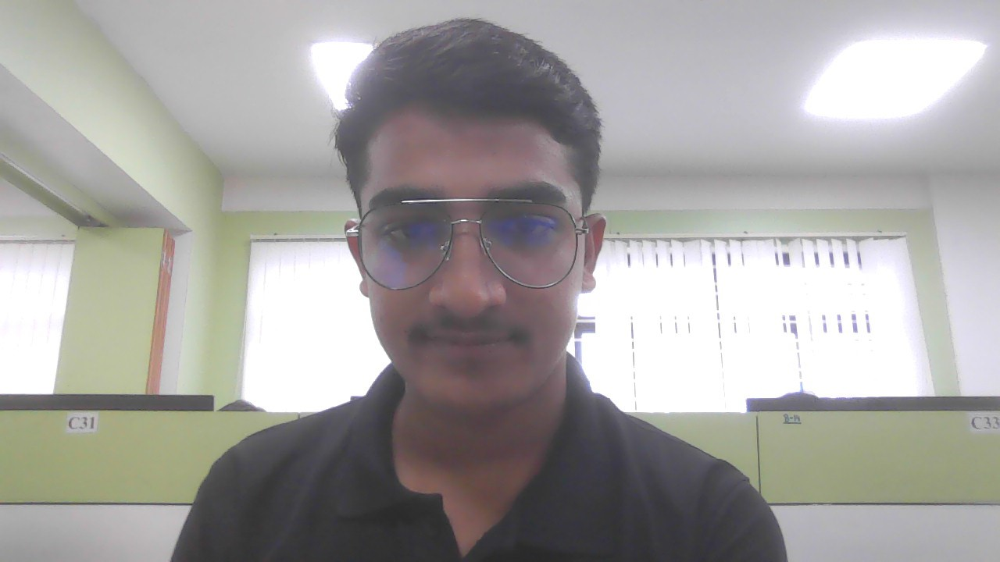

Anuj Kumar
About Me

Education
Indian Institute of Technology (Indian School of Mines), Dhanbad
Bachelor of Technology in Electronics and Communication Engineering (GPA: 8.56 / 10.00)
Relevant CourseWork:
Data Structures and Algorithms (C++), Probability & Statistics
N.V.N.Sen.Sec.School Dalanwas , Mahendergah
Central Board of Secondary Education, Class 12 : (92.50)% and Class 10 : (98.20)%
Projects
(JavaScript, Node.js, Express.js, MongoDB, Insomnia)
- Built a robust backend using Node.js and Express; implemented and tested CRUD APIs with Insomnia for efficient data operations.
- Integrated MongoDB for scalable data storage and management, ensuring reliable retrieval and manipulation.
(Html, CSS, javascript, React.js
- Developed using React, CSS, JavaScript, HTML; includes animations and real-time data fetching.
- Provides 7-day forecasts, rain, temperature, pressure, humidity, visibility, wind speed.
- Features dark/light modes, search bar, Celsius/Fahrenheit.
Technical Skills
- Languages: C++, C, Python, Javascript
- Tech-Stack: MongoDB, HTML, CSS, React.js, Node.js, Express.js, GIT
- Concepts: Object Oriented Programming, Operating System, Data Structure and Algorithms.
Competitive Programming
-
Codeforces
Rating : 1294(Pupil) , Problems Solved - 500
-
Leetcode
Problems Solved - 180
-
Codechef
Rating : 1587(2 star) , Problems Solved - 200
ExtraCurriculars And Achievement
- Secured AIR-7760 in Jee (Advanced) among 160,000 Candidates.
- Secured AIR-3018 in Jee (Mains) among 1.2 millions Candidates.
- Global Rank- 75 in CodeChef Starters 142(Div 3) , Global Rank- 4145 in Codeforces Round 1031(Div 2 ).
- 2ndRunner Up in Robotics and IOT workshop organised by NVCTI, IIT(ISM) Dhanbad.
- Represented IIT(ISM) Dhanbad in InterIIT’23 Sports Meet at IIT Gandhinagar in Atheletics.
Position of Responsibility
- Vice President :FAST FORWARD INDIA (an NGO run by iit ism students).
- Event head: UMEED’25- Annual Festival including tech meets, science exhibitions and various events
organised for under-priviliged students by Fast Forward India- NGO run by IIT (ISM) Students.
- Member: Society Of Electronics Engineers(SEE).
- Organisor: Parakram’23- Sports Fest of IIT (ISM) DHN and Annual sports meet’24 .
Contact Me